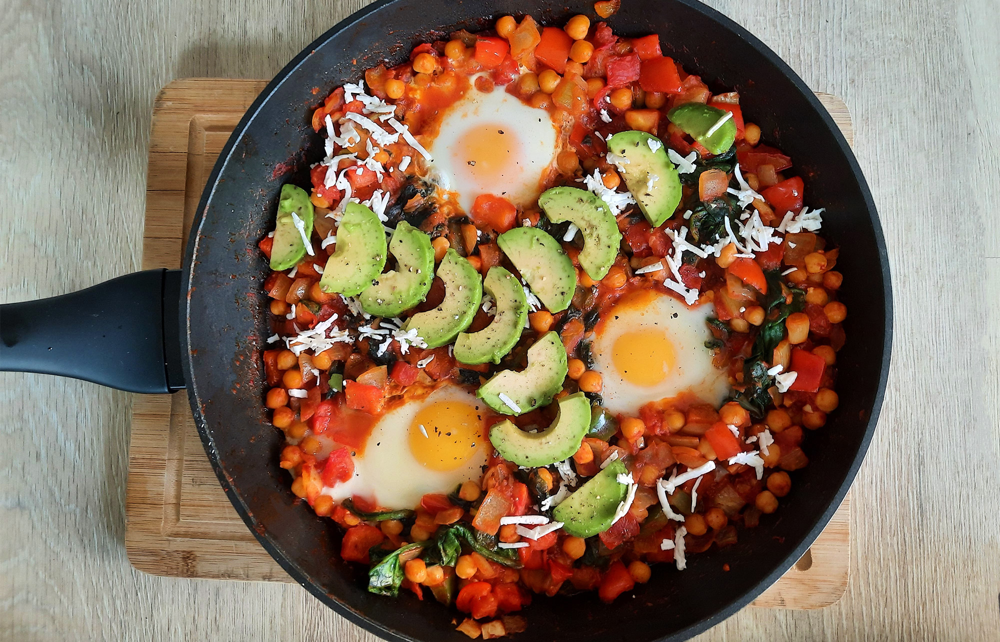

biefstuk chimichurri & gegrilde groenten

bami met spinazie

japanse beef teriyaki

albanese byrek met spinazie

geroosterde aubergine

macedonische shopska salade
gnocchi

groene smoothie

plaattaart met spinazie en peer

avocado salade

amerikaanse caesar salade

italiaanse caponata

shakshuka
Voor de veganistische variant haal je de eieren en de feta eruit.

Bereidingsduur: 45 minuten
Aantal personen: 2
Ingrediënten:
1 ui
1 paprika
2 teentjes knoflook
2 eieren
50 gram fetakaas
1 blikje kikkererwten
200 gram spinazie
2 tomaten
1 avocado
0,5 theelepel paprikapoeder
0,5 theelepel komijn
2 eetlepels harissa
70 gram tomatenpuree
0,5 theelepel chilipoeder
1 theelepel kerriepoeder
pitabroodjes
1 ui
1 paprika
2 teentjes knoflook
2 eieren
50 gram fetakaas
1 blikje kikkererwten
200 gram spinazie
2 tomaten
1 avocado
0,5 theelepel paprikapoeder
0,5 theelepel komijn
2 eetlepels harissa
70 gram tomatenpuree
0,5 theelepel chilipoeder
1 theelepel kerriepoeder
pitabroodjes
Instructies:
1. Snijd alle groenten. Bak de spinazie in een aparte plan tot deze slinkt. Bak de uien en knoflook in een platte pan.
2. Voeg daarna de paprikapoeder, kerrie, chilipoeder en komijn toe en bak kort mee.
3. Voeg de paprika, kikkererwten, tomaten, tomatenpuree, harissa, zout en peper toe. Laat de saus 20 minuten pruttelen.
4. Voeg de spinazie toe en bak even mee. Maak twee kuiltjes in het tomatenmengsel en breek boven ieder kuiltje een ei.
5. Plaats het deksel op de pan en laat 10 minuten garen tot de eieren stevig beginnen te worden. Snijd de feta in blokjes of verkruimel deze. Maak de pitabroodjes klaar.
6. Verdeel de shakshuka over de borden en strooi er verkruimelde feta en plakjes avocado overheen.
7. Serveer met pitabroodjes.
1. Snijd alle groenten. Bak de spinazie in een aparte plan tot deze slinkt. Bak de uien en knoflook in een platte pan.
2. Voeg daarna de paprikapoeder, kerrie, chilipoeder en komijn toe en bak kort mee.
3. Voeg de paprika, kikkererwten, tomaten, tomatenpuree, harissa, zout en peper toe. Laat de saus 20 minuten pruttelen.
4. Voeg de spinazie toe en bak even mee. Maak twee kuiltjes in het tomatenmengsel en breek boven ieder kuiltje een ei.
5. Plaats het deksel op de pan en laat 10 minuten garen tot de eieren stevig beginnen te worden. Snijd de feta in blokjes of verkruimel deze. Maak de pitabroodjes klaar.
6. Verdeel de shakshuka over de borden en strooi er verkruimelde feta en plakjes avocado overheen.
7. Serveer met pitabroodjes.